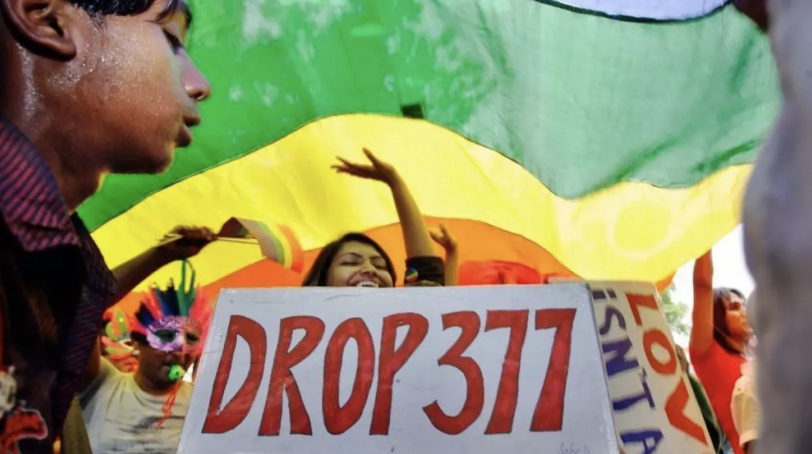

A Long Struggle
In fact, the first challenge to the law was taken by the Naz Foundation, a NGO that works to create awareness of HIVS/AIDS and other sexual health issues. In 2001, they filed a petition challenging the law in the Delhi High Court.
“HIV/AIDS has been the entry point to start talks about LGBTQ rights in India,” says Sylvester Merchant, another Senior Program Officer at India HIV/AIDS Alliance. “We did not have our own Stonewall and hence, HIV was our starting point,” he says, referring to a violent uprising in 1969 by the LGBTQ community in New York City. The movement is thought to have been the starting point of the fight for LGBTQ rights in the U.S.
A long legal tussle ensued. New Delhi’s High Court decriminalized homosexuality among consenting adults in 2009, only to be later overturned by the country’s Supreme Court in 2012, following appeals from religious groups. The top court had then observed that less than 200 people were prosecuted in over 150 years for committing an offense under the section.
In 2016, five petitions to overturn the law were filed in the Supreme Court by prominent LGBTQ activists. The petitioners claimed that Section 377 violated their sexual autonomy, privacy and right to equality. Before Thursday’s verdict, about a dozen more petitions were filed by other parties arguing to quash the law.
While the ruling is welcomed by Indian LGBTQ activists, prominent voices in the community say challenges remain.
“The LGBTQ movement in India is very urban-centric,” says Samarpan Maiti, a scientist and rights activist who won the title of Mr. Gay India earlier this year. Maiti, who is a brain cancer researcher, says his motivation to sign up for the pageant was simply to create awareness. “I thought this would send a message to people in rural areas as they would likely take the word of a scientist who is living as an openly-gay man.”
Maiti has been working with LGBTQ people in underprivileged parts of India. He says spreading awareness to remote areas is a major hurdle as a majority of people in these regions consider homosexuality a disease, or at best, a phase. Maiti recalls how his mother blamed homosexuality on his city life when he came out to his family in 2016. Gaining her acceptance was a process that took a long time, he says.